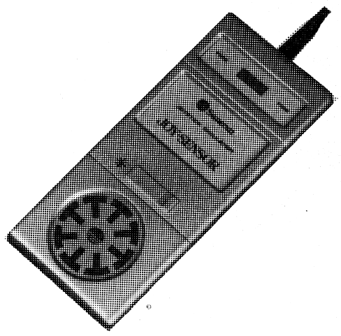

1983
Suncom / Sunflex (Suncom Inc., Elk Grove Village, Illinois)
Suncom Joy Sensor
A joystick with no stick — a printed eight-direction ring you stroke with your thumb on a touch panel

Overview
Deep dive
Media
Sources
- Ahl, David H. "Controller update." Creative Computing 9, no. 12 (December 1983), p. 142
- "Suncom Introduces New Products." The Video Game Update 2, no. 7 (October 1983), p. 104
- Wikimedia Commons — File:Suncom Joy Sensor.png (CC BY 4.0, Video Game History Foundation scan)
- Wikimedia Commons — Category:Game controllers by Suncom